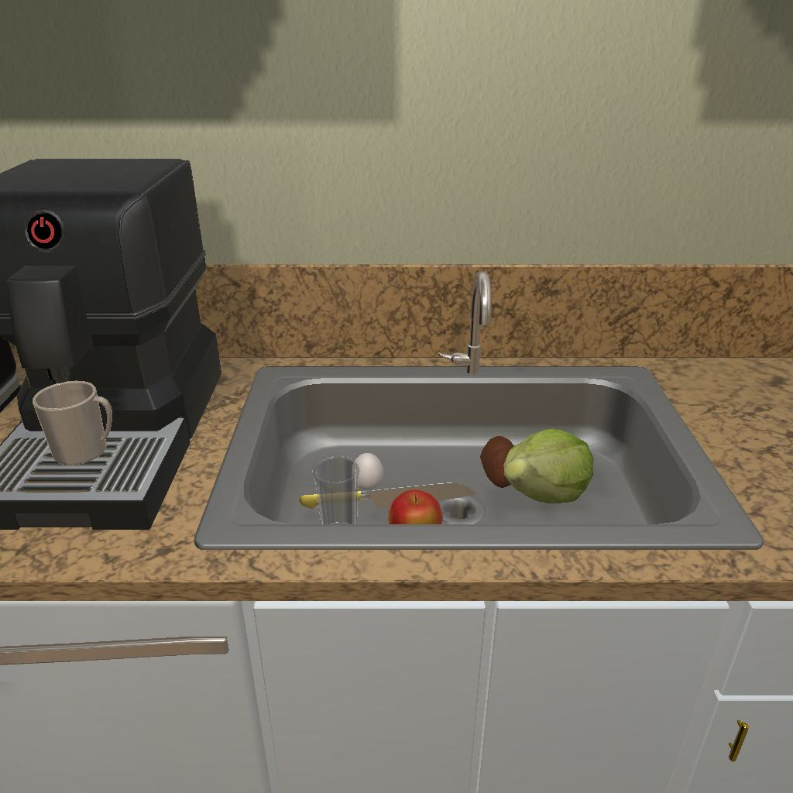
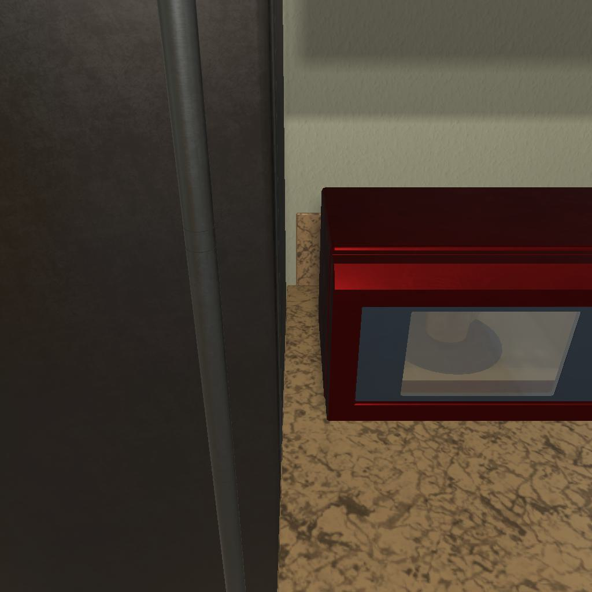

---------------------------------------------------------task: 18---------------------------------------------------------
--------------------------------------------------------------------------------------------------------------------------------------------------------------------
--------------------------------------------------------------------------------------------------------------------------------------------------------------------
Step:--------------------------------------------------------------------------3-------------------------------------------------------------------------------
----------------------------------------
VLM Prompt:
Image1:
Image2:
Image3:
**Instruction**
1. Analyze the provided images to identify all visible household objects and compare the difference between images (e.h. whether the object is opened or not and taken on hand or not), focusing on those relevant to the task description "put a cool pot in cabinet."
2. Use the analysis of images and the task hint "The agent must find an object of the desired type, pick it up, go to a fridge, cool the object with the fridge, then find the correct location to place it, and put it down there. The agent does not need to use the fridge button or open the fridge to cool the object, and the agent just needs to do action that is "cool the object with the fridge"." to answer the question: what is the most reasonable action in the choices for the task description "put a cool pot in cabinet"?
3. Decide and write the answer using the template: The answer is: (i): , where i is the real number. If there is no desired object in images, search every place based on **Initial Observation** to find the object. And if no one is exactly correct, choose a similar answer.
**Initial Observation**
You are in the middle of a room. Looking quickly around you, you can see cabinet (1-20), countertop (1-3), coffeemachine (1), toaster (1), sink (1), fridge (1), microwave (1), garbagecan (1), drawer (1-3), sinkbasin (1), stoveburner (1-4), shelf (1-3)
**Answer Choices**
(1): go to cabinet 2
(2): go to cabinet 3
(3): go to cabinet 4
(4): go to cabinet 5
(5): go to cabinet 6
(6): go to countertop 1
(7): go to coffeemachine 1
(8): go to cabinet 7
(9): go to toaster 1
(10): go to cabinet 8
(11): go to sink 1
(12): go to microwave 1
(13): go to garbagecan 1
(14): go to cabinet 9
(15): go to cabinet 10
(16): go to countertop 2
(17): go to cabinet 11
(18): go to cabinet 12
(19): go to drawer 1
(20): go to countertop 3
(21): go to drawer 2
(22): go to cabinet 13
(23): go to sinkbasin 1
(24): go to cabinet 14
(25): go to drawer 3
(26): go to stoveburner 1
(27): go to stoveburner 2
(28): go to stoveburner 3
(29): go to cabinet 15
(30): go to stoveburner 4
(31): go to cabinet 16
(32): go to cabinet 17
(33): go to cabinet 18
(34): go to cabinet 19
(35): go to cabinet 20
(36): go to shelf 1
(37): go to shelf 2
(38): go to shelf 3
(39): open fridge 1
(40): close fridge 1
(41): examine fridge 1
**Answer**
Let's think step by step by following the instructions.
----------------------------------------
----------------------------------------
Original Response:
Firstly, we analyze the images provided:
Image1 shows a countertop with a sink, a coffee machine, a mug, and some fruits and dishes in the sink. There is no pot visible in this image.
Image2 shows a cabinet that appears to be closed. There is no pot visible in this image.
Image3 shows a fridge next to a red microwave. There is no pot visible in this image.
Based on the task description "put a cool pot in cabinet," we need to find a pot, cool it with the fridge, and then put it in a cabinet. According to the task hint, we don't need to use the fridge button or open the fridge to cool the object; we just need to do an action that is "cool the object with the fridge."
From the initial observation, we know there is a fridge and several cabinets in the room, but since no pot is visible in the images provided, we need to search for it.
Considering the answer choices and the task at hand, the most reasonable action would be to find the pot first before we can cool it and put it in a cabinet. Since we can't see the pot in the images, we should search every place that could potentially have a pot, such as the countertop, cabinets, or stoveburners.
The answer is: (26): go to stoveburner 1, as it's a common place to find a pot. If the pot is not there, we should continue searching in similar locations.
----------------------------------------
----------------------------------------
>>> Refine Original VLM Response and Get Pure Action: go to stoveburner 1, as it's a common place to find a pot
----------------------------------------
-----------------------------------------------------------------
Running time: 47.965171337127686 seconds
Total Money: 10.689840000000002
-----------------------------------------------------------------
-----------------------------------------------------------------
Text Observation:Nothing happens.
-----------------------------------------------------------------
UNSUCCEED